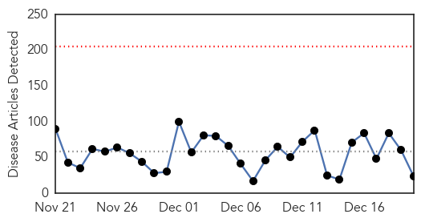
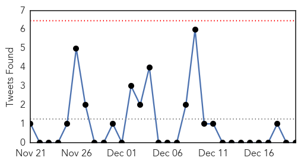

30 Day Trends
Web: 0 alerts, 0 warnings
Twitter: 0 alerts, 0 warnings
Top Articles:
- 0.987
- Flu is now widespread in Virginia
- 0.986
- Flu vaccines recommended for seniors
- 0.937
- Health chiefs call for action on C. Diff outbreak after two more die in hospital
- 0.917
- Chicago Tribune
- 0.917
- Chicago Tribune
- 0.917
- Chicago Tribune
- 0.917
- Chicago Tribune
- 0.917
- Chicago Tribune
- 0.902
- 'Bourbon Virus': New tick-borne virus discovered after the death of Kansas man
- 0.897
- Five Caramel Apple Listeria Patients have Died
- 0.853
- Prepackaged caramel apples blamed for four deaths
- 0.838
- Prepackaged caramel apples linked to deaths - IronMountainDailyNews.com
- 0.797
- Cost is a barrier to STD testing for many patients
- 0.769
- Five Dead, 21 Hospitalized, After Eating Tainted Caramel Apples
- 0.754
- Iowa flu hospitalization doubles in recent weeks
- 0.729
- Deaths linked to caramel apples
- 0.663
- Scientists created a computer system that helps predict malaria outbreaks in Ethiopia
- 0.650
- Bad to the bone: Doctors urged to reconsider treatment for infection
- 0.643
- TB Tests Ordered At High School in Jacksonville
- 0.619
- Odisha Health Minister takes stock of situation in Malkangiri village, Odisha Current News, Odisha Latest Headlines
- 0.576
- Overwhelmed services leaving local Huntingdon’s patients feeling helpless
- 0.569
- Cambodian villagers urged not to lynch doctor suspected of spreading HIV
- 0.563
- 2 Minnesota deaths blamed on tainted caramel apples
- 0.546
- Hoboken University Medical Center Awarded Coveted 2014 Leapfrog Top Hospital Distinction
Top Tweets:
-
No tweets found for Dec 20, 2014
Web/News Articles
Tweets
Article Locations